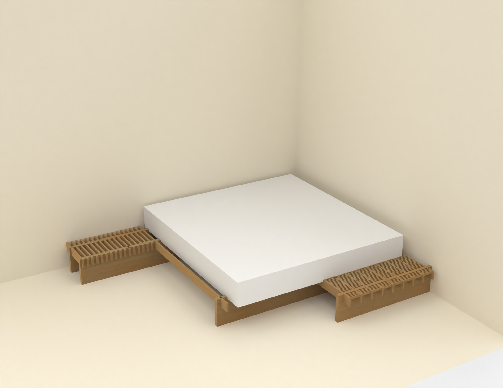
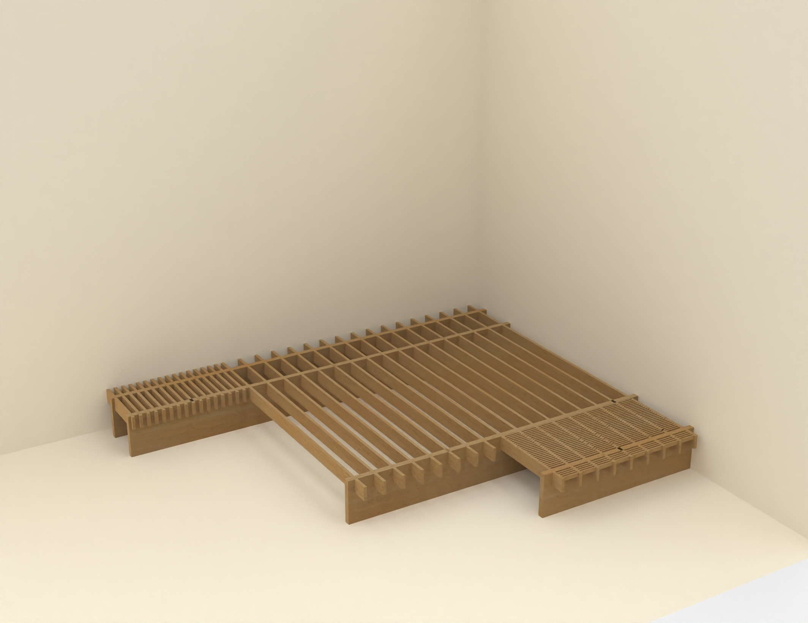
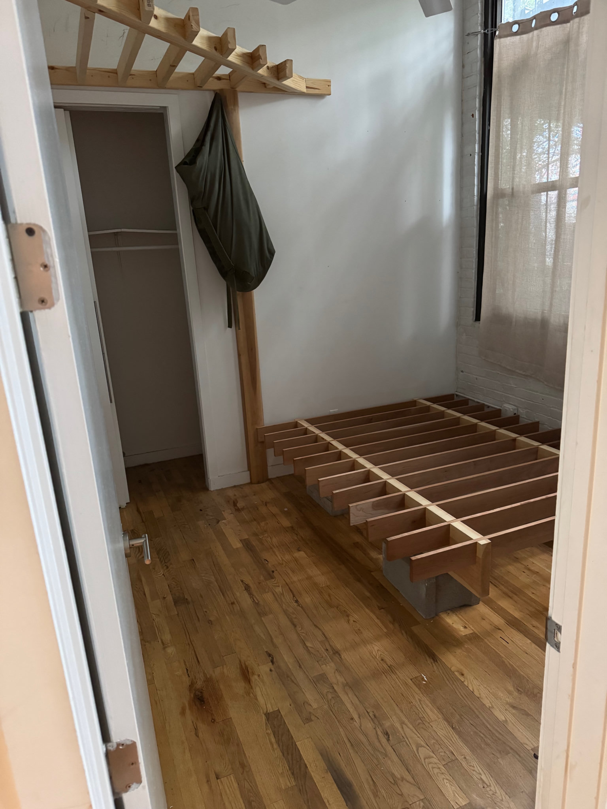

Gabriel KafkaWoodworking and Design |
| Structural Tools / Personal Projects |
Full-height storage shelf system with stacked slatted platforms, vertical posts, and exposed rail joinery. Built as a repeated structural grid: open ribs, visible load path, and modular shelf bays.


Low platform bedframe with an exposed slatted wood structure, gridded side platforms, and a recessed central mattress volume. The design reads as a structural deck: repeated ribs, cross members, and side extensions that make the support logic visible.


Long slatted wood bench with repeated vertical supports and triangular bracing. Designed as a structural object first: thin parallel members, clear load path, exposed rhythm, and simple shop-built joinery.


Bedframe build with an exposed ribbed platform and overhead wood rack structure.

Sites: Structural Tools / Personal Projects / Portfolio